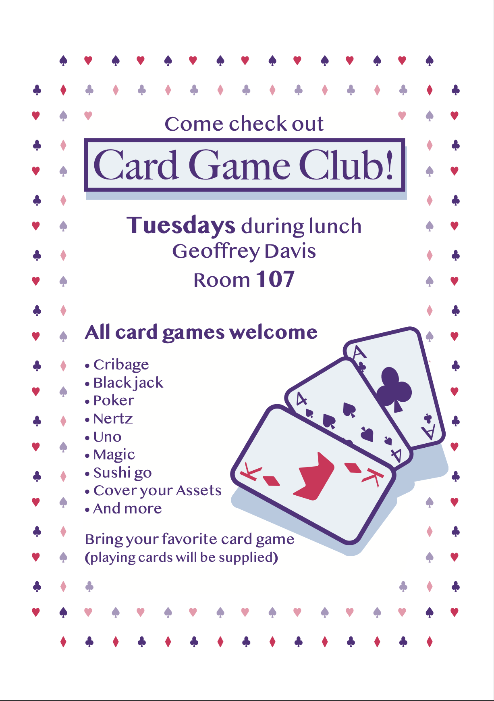

This was a poster that I made to get the word out for my schools card game club, I ended up playing around with lots of Ideas, but ended up choosing to have a border of card symbols, and a neutral center background. This project taught me about designing for print, and avoiding too much visual clutter.
